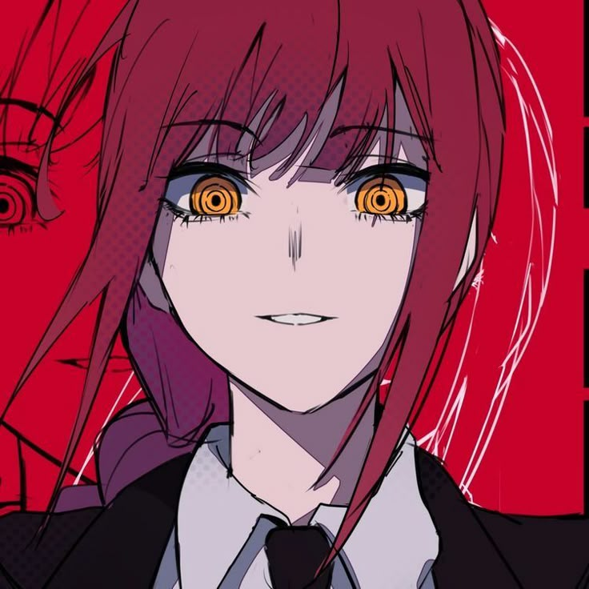

list of my favorite animes 
-
I want to eat your pancreas - i cried in the end. story is so cool. "waifu that did not deserve to die". i stole the previous sentence, but do u know from where though?
-
Attack on titan - i love the fantasy and story, and its so mysterious
-
Your name - has its own vibe
-
Arcane - musics, creativty, animations! just no words to describe
-
Chainsaw man - i like the female characters from it and denji ofc
have not seen demon slayer and jujutsu kaisen yet